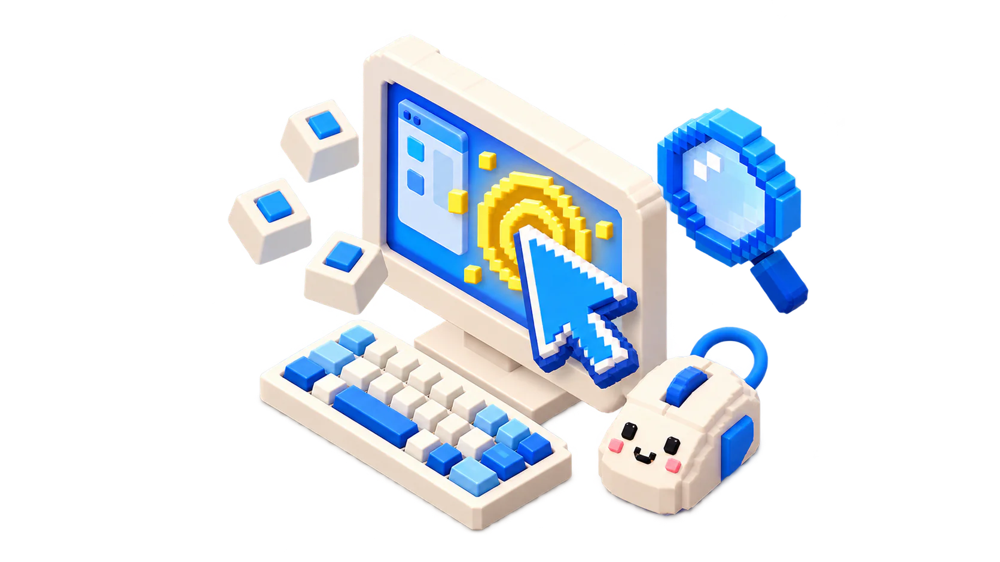

macOS · 무료 · ver 0.7
커서와 키 입력을
크고 또렷하게.
어디를 가리키고, 무엇을 눌렀는지. 강의와 화면 시연을 함께 따라오기 쉽게 만들어 주세요.

GET STARTED
처음이라면, 이 순서로.
한 번 설치하고 권한을 설정하면, 메뉴 막대에서 바로 사용할 수 있어요.
VISUAL GUIDE
설정 화면을 보며 따라 해 보세요.
실제 BigMouse의 한국어 설정 화면입니다. 이미지를 누르면 크게 볼 수 있어요.
PERMISSIONS
필요한 기능에만 권한을 주세요.
키 입력 표시와 확대는 서로 다른 권한을 사용합니다. 커서 강조·클릭 효과·스포트라이트에는 이 두 권한이 필요하지 않아요.
권한 이름에 ‘오디오’가 들어 있어도 BigMouse는 오디오를 캡처하지 않습니다. 확대 화면과 키 입력을 파일에 저장하거나 전송하지 않습니다.
TROUBLESHOOTING
권한은 켜져 있는데
작동하지 않나요?
앱을 업데이트하거나 다른 위치에서 실행하면 macOS 권한이 이전 앱을 가리킬 수 있어요. 실제 사용할 앱으로 다시 연결해 주세요.
관리자 인증은 macOS 창에서 직접 진행하세요. 암호를 채팅이나 문의 글로 보내지 마세요.
BEFORE YOU PRESENT
발표 전에 30초만 확인하세요.
FAQ
자주 묻는 질문
FREE FOR EVERYONE
BigMouse ver 0.7
Apple Silicon용 첫 공식 무료 버전입니다. 아래 버튼에서 앱 ZIP을 받고, 체크섬을 확인한 뒤 응용 프로그램 폴더로 옮겨 주세요.
Developer ID 서명·Apple 공증이 없어 macOS가 실행을 차단할 수 있습니다. 자세한 내용은 릴리스 노트를 읽어 주세요.
공식 다운로드와 소스
앱 다운로드SHA-256 확인릴리스 노트github.com/jvisualschool/BIGMOUSE앱·소스·체크섬을 GitHub에서 함께 제공합니다. Intel용 배포와 별도 Mac 신규 설치 검증은 미완료입니다.